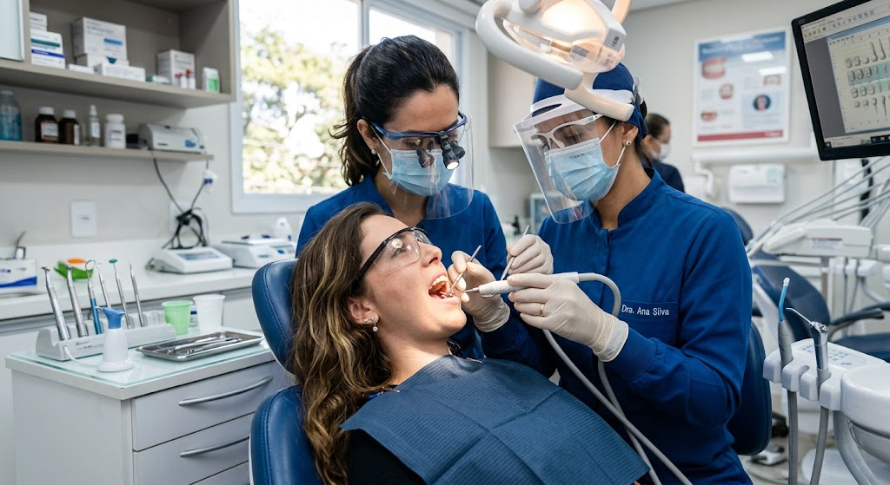
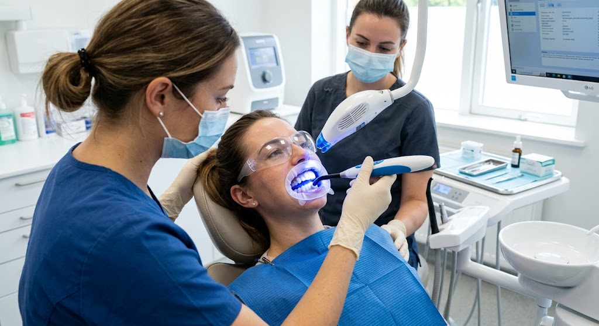
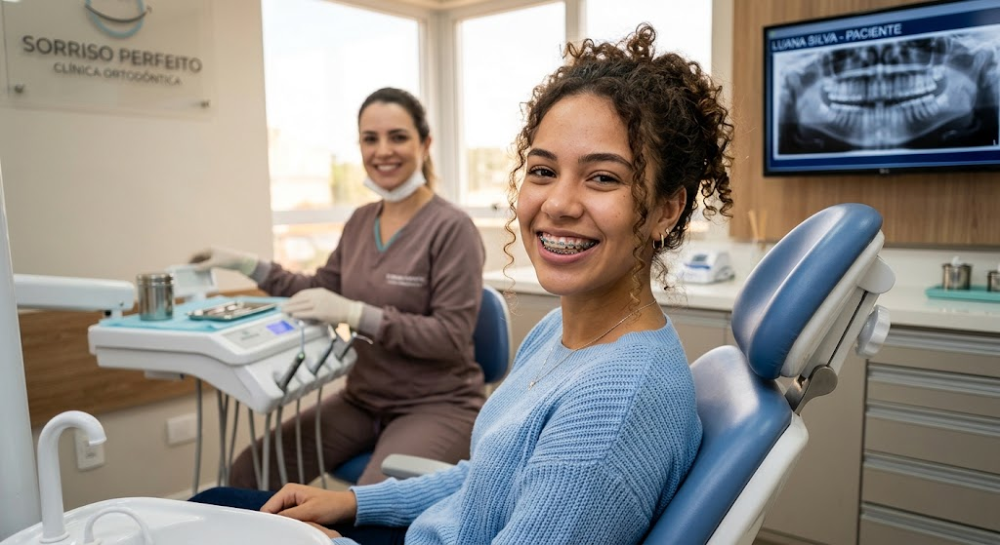
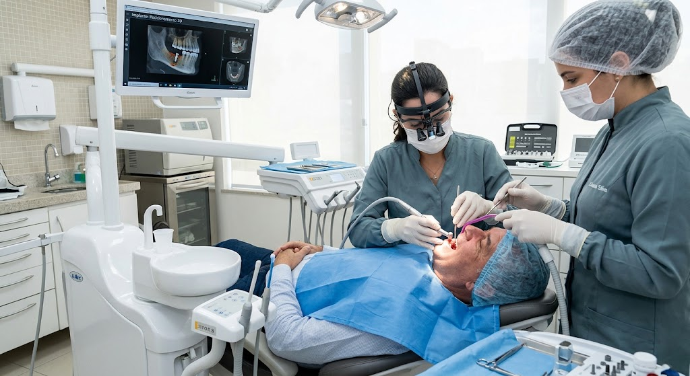
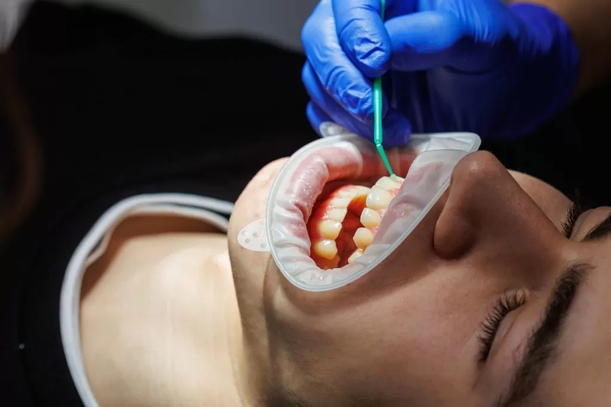
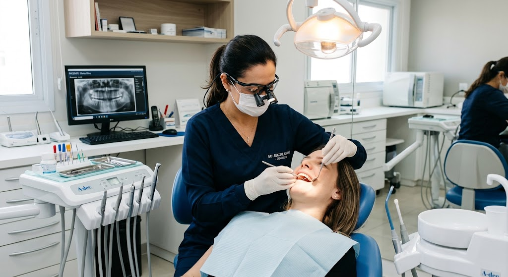

Bem-vindo à Sorriso Metálico!
O objetivo do sistema é facilitar a gestão da Clínica Odontológica Sorriso Metálico, permitindo realizar o cadastro unificado dos pacientes, organizar os agendamentos e acompanhar o status das consultas em tempo real. O sistema também possui um prontuário digital clínico para armazenar as informações dos pacientes e permite agendamentos VIP somente aos sábados pela manhã.
Principais funcionalidades
- Cadastro unificado dos pacientes.
- Cadastro das informações clínicas dos pacientes.
- Agendamento de consultas.
- Restrição de agendamentos VIP para sábados pela manhã.
- Controle dos horários disponíveis.
- Acompanhamento do status da consulta em tempo real.
- Prontuário digital clínico.
- Registro do histórico de atendimentos.
- Organização das informações dos pacientes.
- Interface Premium em Azul-Marinho e Prata.
- Interface rápida e de alta performance.
Serviços Odontológicos

Clareamento Dental

Ortodontia

Implante Dentário

Restauração

Consulta Odontológica
Serviços e Valores
| Serviço | Descrição | Valor |
|---|---|---|
| Consulta Odontológica | Avaliação geral da saúde bucal | R$ 150,00 |
| Limpeza Dental | Limpeza e prevenção odontológica | R$ 180,00 |
| Clareamento Dental | Procedimento de clareamento dos dentes | R$ 500,00 |
| Restauração | Restauração de dentes danificados | R$ 250,00 |
| Implante Dentário | Procedimento para substituição de dente | R$ 2.500,00 |